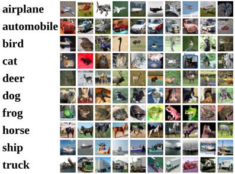
Image Classification
Lecture overview
- The classification taskImages, labels, and appearance variation
- Nearest-neighbor classificationSimilarity, voting, and the choice of distance
- Model selectionGeneralization, validation, and final evaluation
- Linear classificationClass scores, image templates, and decision boundaries
- Probabilistic classificationScores → probabilities → label likelihood → loss
An image, one category
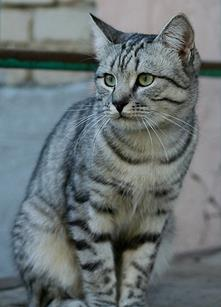
Given an image and a fixed set of categories, predict one category.
dogcattruckairplane
The label describes the image as a whole.
Pixels and meaning
We see an object. The input is an array.
4172101132589514418383123175201110153192226
Illustrative values from one channel.
Which patterns in this array support “cat”?
Why is image classification difficult?
One category can produce many different pixel arrays.
A classifier should preserve the label when appearance or visibility changes.
Variation within one category
Viewpoint
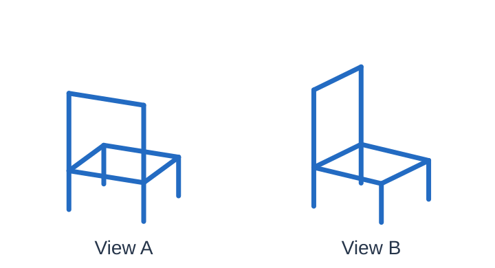
A new camera pose changes projected geometry and visibility.
Illumination
Lighting changes intensity, shadows, and color.
The category can remain stable despite large changes in the image.
Clutter and occlusion
Background clutter
Many pixels belong to the surroundings.
Occlusion
Only part of the object may be visible.
Which evidence is useful, and which evidence is incidental?
Deformation and category diversity
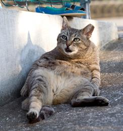
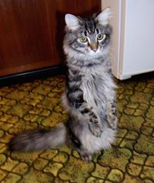
Deformation
The same object can change its shape and pose.
Intraclass variation
Different instances share a label despite different appearances.
Context can help or mislead
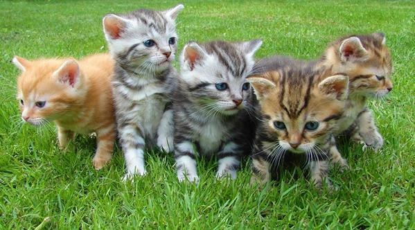
Object appearance provides evidence.
Surrounding objects and scene layout also provide evidence.
If every training cat sits on grass, what happens indoors?
Useful correlations may fail when the environment changes.
Representations for image classification
Classical approach
image→designed features→learned classifier
Examples: gradients, local descriptors, and feature histograms.
Deep learning approach
image→learned representation→class scores
The representation and classifier can be trained together.
This lecture introduces nearest-neighbor and linear classifiers; both can use raw pixels or feature vectors.
Learning from labeled examples
Training
Labeled examples \{(x_i,y_i)\}_{i=1}^N
↓Learning procedure
↓Classifier
Prediction
New image x
↓Classifier
↓Predicted label \hat y
The goal is accuracy on new examples from the intended setting.
Nearest-neighbor classification
Can similarity to labeled examples determine a category?
The nearest-neighbor rule
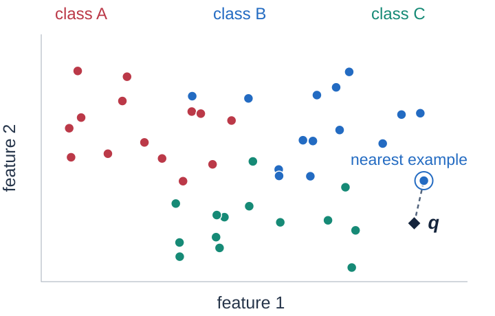
The diamond marks the unlabeled query
Training
Store
Prediction
For a query
A distance calculation
Flatten each image into a vector with
Query \mathbf q
10203040
Stored example \mathbf x^{(i)}
12173045
Superscript
Nearest neighbor in NumPy
# X_train: (N, D), q: (D,), y_train: (N,)
# Rows index examples; columns index coordinates.
X = X_train.astype(np.float32)
q = q.astype(np.float32)
distances = np.abs(X - q).sum(axis=1)
i_star = np.argmin(distances)
y_pred = y_train[i_star]Row
Cast before subtraction to avoid uint8 wraparound. NumPy uses zero-based indices.
Where nearest neighbor spends time
| Operation or storage | Brute-force cost |
|---|---|
| Keep references to existing arrays | |
| Copy and store the training data | |
| Predict one label | |
| Memory for the stored data |
For fixed
Voting among nearby examples
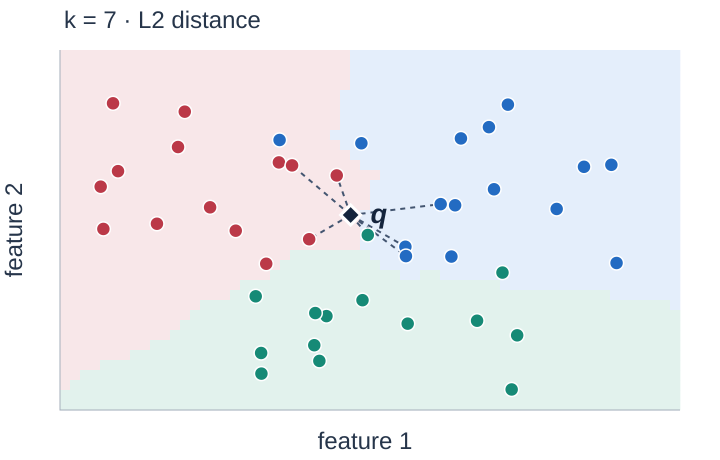
Choose the most frequent label among these
Larger neighborhoods can reduce sensitivity to individual examples.
For a vote tie, use the tied class whose nearest neighbor is closest.
How k changes the decision regions
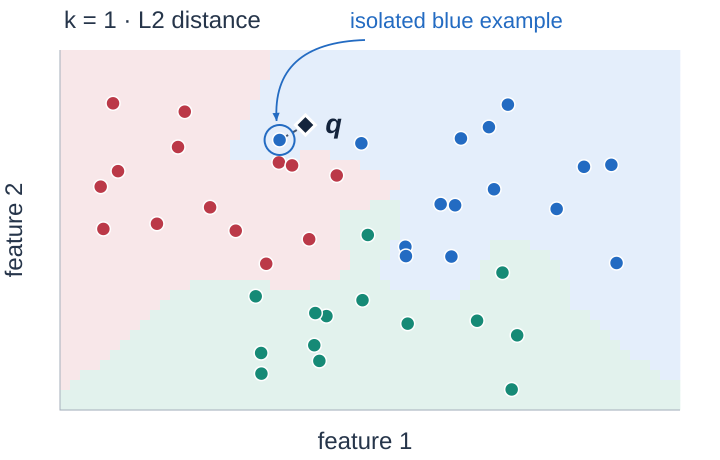
Prediction for q: blue
Background colors show predicted labels.
Dots are stored examples.
Increase
Click the plot to move query
L1 and L2 define different neighborhoods
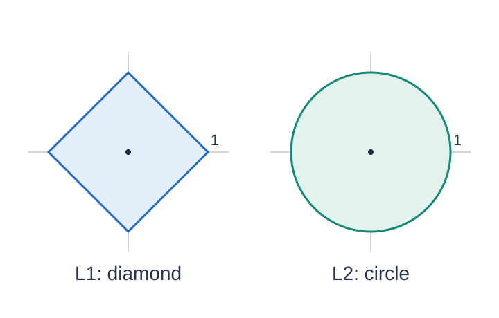
Contours show
L2 preserves distances under orthogonal rotations. L1 generally does not.
The distance metric can change the boundary
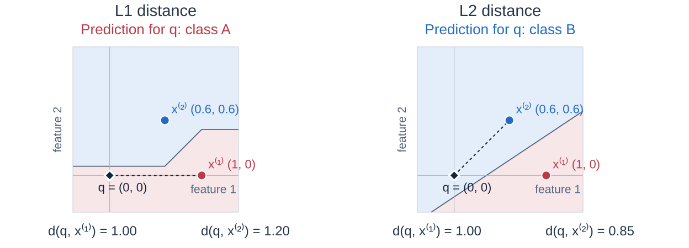
Click either plot to move the same query
Fixed examples:
Model selection
How should we choose k and the distance metric?
Underfitting and overfitting
Generalization: predicting labels for new examples from the target distribution.
Underfitting · k = 61
Training error: 45.9%
Validation error: 50.0%
Too rigid to capture the pattern.
Useful fit · k = 5
Training error: 13.1%
Validation error: 6.4%
Captures the pattern despite noisy labels.
Overfitting · k = 1
Training error: 0.0%
Validation error: 14.5%
Fits training noise; performs worse on new examples.
Dashed: underlying boundary. Synthetic example: 61 training points with 6 flipped labels; 3,721 clean validation points.
Model complexity and generalization
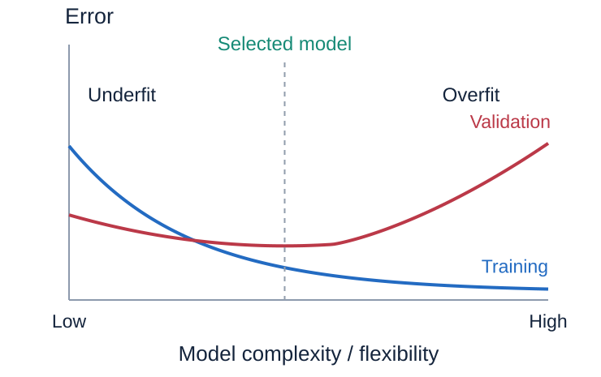
Schematic trend, not a universal curve.
Underfitting: the model cannot capture the pattern, or has not been fitted well.
Overfitting: fitting training-specific details harms predictions on unseen data.
Select complexity using validation error, then evaluate once on the test set.
Training data and model complexity
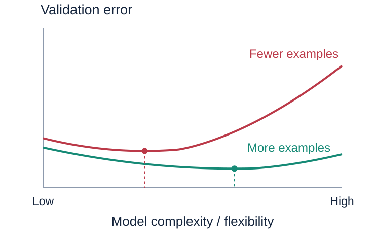
Schematic: same task, comparable data quality and fitting procedure.
More representative training data can reduce overfitting.
A more flexible model may become useful when more data supports it.
More parameters alone do not guarantee better generalization.
Which choices should we tune?
Neighborhood size
How much local evidence should contribute?
Distance metric
What makes two representations similar?
Choose hyperparameters by measuring performance on held-out validation data.
Two tempting evaluation mistakes
Choose k using training accuracy?
With distinct stored inputs, 1-NN can classify each training example using itself.
This does not measure performance on unseen images.
Choose k using test accuracy?
The test set then influences the model choice.
Its score no longer provides an independent final evaluation.
Training, validation, and test
TrainingValidationTest
| Training | Fit parameters or store examples. |
|---|---|
| Validation | Compare choices such as k, metric, and representation. |
| Test | Evaluate the selected procedure after choices are fixed. |
For evaluation on new scenes, keep all views of each scene in one split to avoid information leakage.
Cross-validation reuses limited data
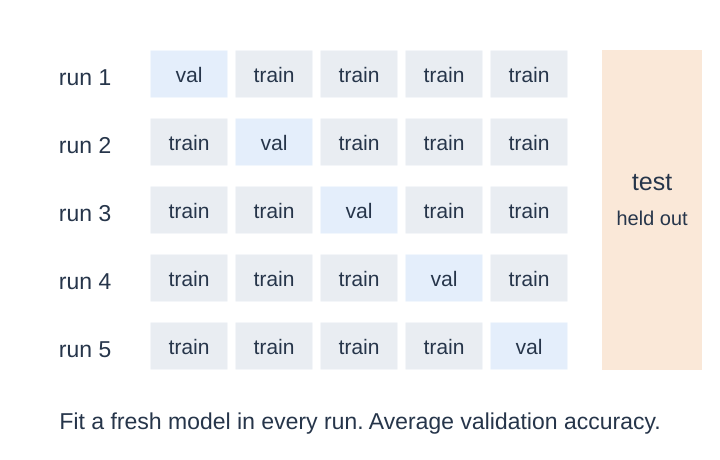
For each candidate hyperparameter setting:
- Fit on four folds.
- Validate on the remaining fold.
- Rotate the held-out fold and average.
After selection, fit on all development data and evaluate on the untouched test set.
CIFAR-10 as a working example
10 categories
50,000 training images
10,000 test images
Hold out validation data from the training portion.
Nearby pixels can retrieve the wrong class
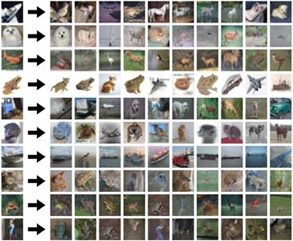
Leftmost image in each row: query.
Following images: nearest training images by pixel distance.
Similar colors and backgrounds can dominate object identity.
Inspect a failure: what visual property makes the retrieved image close?
Selecting k from validation results
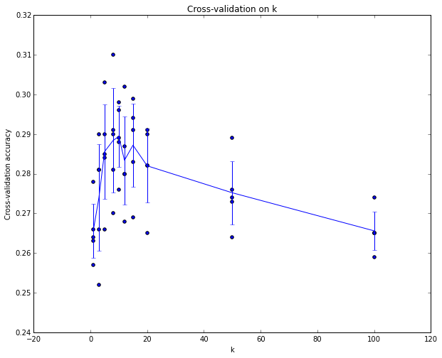
Each dot represents one fold.
The line joins fold means.
Bars show standard deviation across folds.
In this example, mean validation accuracy peaks near
Choose k using validation, then evaluate once on the test set.
Pixel distance and perceptual similarity
Each modified image has the same L2 distance from the original.
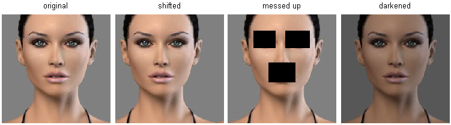
Pixel distance does not reliably reflect perceptual similarity.
What nearest neighbors teach us
- The representation and distance determine which examples count as similar.
- k controls the size of the neighborhood used for a prediction.
- Validation supports model selection. Test data supports final evaluation.
- Raw pixel distance is a weak baseline for semantic recognition.
Can we replace the stored dataset with a compact set of learned parameters?
Linear classification
Can learned parameters replace the stored training set?
A parametric score function
image x
→Training
Estimate a fixed-size set of parameters.
Prediction
Compute scores using those parameters.
Scores rank classes. They are not yet probabilities.
The linear classifier
| Input | CIFAR-10 image flattened to |
|---|---|
| Parameters | |
| Output | Ten scores, one for each category |
Strictly, the bias makes the mapping affine. “Linear classifier” is standard terminology.
Linear classifier: algebraic view
The highlighted row contains the four weights used for the cat score.
Next, place these same four weights back at their pixel locations.
Linear classifier: visual view
Image x
56231242
The same cat row from W
Cat row, reshaped
0.2−0.50.12.0
Keep the same
pixel order
Multiply corresponding entries, sum, then add the bias.
For CIFAR-10, reshape each row to a 32 × 32 × 3 template
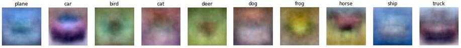
Colors show signed, rescaled weights. Each template combines varied appearances.
Two-class decision geometry
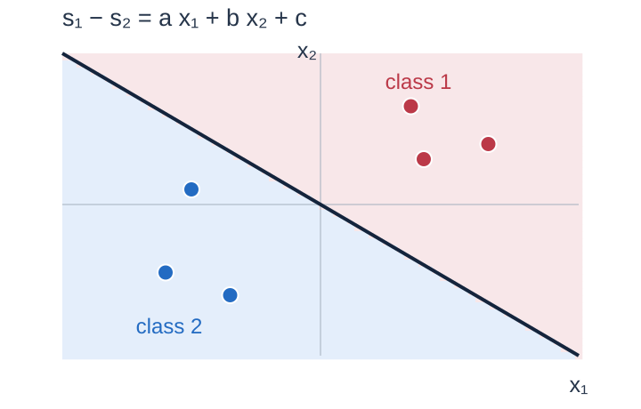
Two-class boundary:
The normal is
With more classes, compare every class score.
Multiclass decision regions
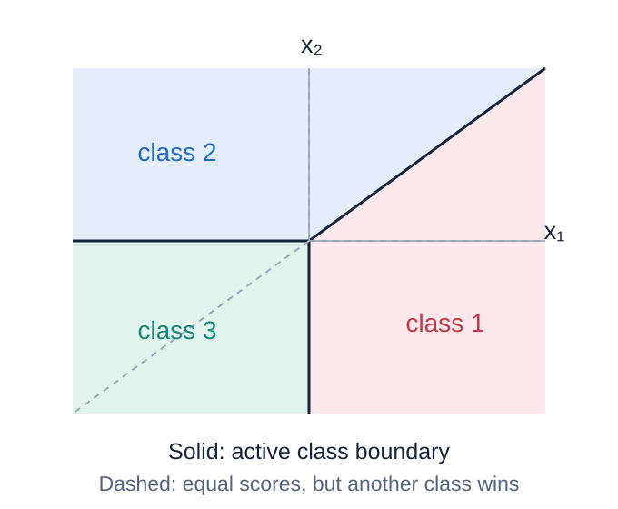
Example:
Class
Each pairwise boundary is linear. A class region can have several boundary pieces.
Where a single linear boundary fails
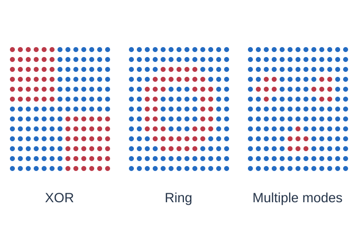
A two-class affine classifier cannot separate these labels with one hyperplane.
Nonlinear features can change what becomes linearly separable.
Nearest neighbors and linear classifiers
| Nearest neighbor / k-NN | Linear classifier | |
|---|---|---|
| Training | Store examples; no weight fitting. | Optimize weights and biases. |
| Per-query cost | ||
| Prediction storage | ||
| Strengths | Simple baseline; flexible local regions; inspect retrieved neighbors. | Compact; fast scoring; interpretable class weights. |
| Limitations | Expensive search; depends strongly on representation and distance. | Restricted affine-score regions; may underfit the chosen features. |
From scores to class probabilities
A score tells us which category wins.
Can a prediction also express how strongly the model favors each category?
Scores are not probabilities
| Class | Score |
|---|---|
| cat | 3.2 |
| car | 5.1 |
| frog | −1.7 |
Prediction: car
A score is not a percentage.
Model probabilities:
Softmax probabilities
| Class | Logit | Positive weight | Probability |
|---|---|---|---|
| cat | 3.2 | 24.533 | 0.1300 |
| car | 5.1 | 164.022 | 0.8690 |
| frog | −1.7 | 0.183 | 0.0010 |
Exponentiate, then normalize.
Explore softmax probabilities
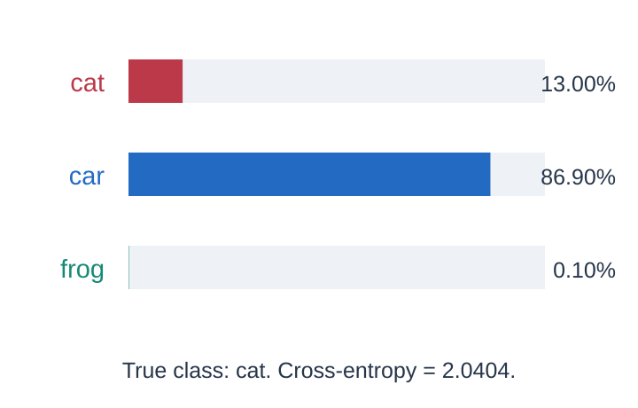
What happens if we add the same constant to every logit?
Which prediction better supports the label?
Observed label: cat.
| Model prediction | Cat | Car | Frog | Argmax |
|---|---|---|---|---|
| A | 0.1300 | 0.8690 | 0.0010 | car |
| B | 0.3000 | 0.6000 | 0.1000 | car |
Both predict car. Which assigns more probability to the observed cat label?
Maximize the likelihood of training labels
Training labels:
Assume labels are conditionally independent given inputs and parameters.
Cross-entropy loss
Observed label: cat
Logits: (3.2, 5.1, −1.7)
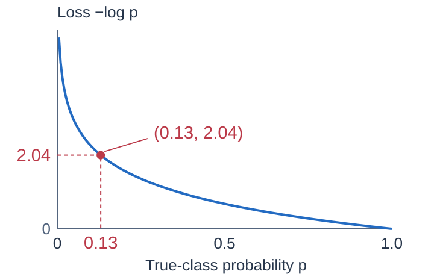
Checking the behavior of softmax loss
If all C scores are equal?
For ten classes:
How small or large can the loss be?
A numerically stable implementation
# S: (N, C); y: integer class indices, shape (N,)
z = S - S.max(axis=1, keepdims=True)
log_Z = np.log(np.exp(z).sum(axis=1))
loss = (log_Z - z[np.arange(len(y)), y]).mean()Subtracting a common constant leaves softmax probabilities unchanged.
Prefer the framework’s fused cross-entropy function in training code.
From image categories to a learning objective
| Component | Question |
|---|---|
| Representation and distance | What makes examples similar? |
| Validation protocol | How do we choose among alternatives? |
| Scores | How does the model rank categories? |
| Softmax probabilities | How is probability mass shared? |
| Cross-entropy | How well does the model explain observed labels? |
Exit check
- Why can a shifted image have the same label but a large pixel distance?
Corresponding pixels change, while object identity can remain stable.
- Which split chooses k? Which split reports the final result?
Validation chooses k. The untouched test set evaluates the final procedure.
- For two equal logits, what are the probabilities? With a known label, what is the loss?
p=(1/2,1/2) ;-\log(1/2)=\log2\approx0.6931 .
Reading list
- CS231n · Image classification
Nearest neighbors, distances, validation, and model selection.
- CS231n · Linear classification
Class scores, softmax probabilities, and negative log likelihood.
- Foundations of Computer Vision · Chapter 9 and Chapter 11
§§9.2, 9.5, 9.7.3: learning and risk; §11.2: underfitting and overfitting.
- Supplementary · Bag of visual words and spatial pyramids
Sivic & Zisserman, ICCV 2003: local descriptors → visual vocabulary → image histogram.
Lazebnik et al., CVPR 2006: spatial pyramid matching preserves coarse layout.